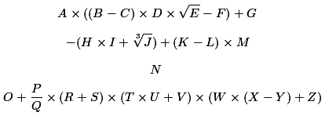

Fun With Numbers
Zap Kaplow just finished competing in a gruelling 4-day sexvigintathlon of vintage video games. The final levels he attained on each game were then fed into the following formula to determine the amount of points awarded for each day of competition:

- His final level on Asteroids was equal to the number of 2 digit happy numbers
- His final level on Berserk was equal to the sum of the digits in the largest 3 digit, palindromic, nonagonal number
- His final level on Centipede was equal to the sum of the digits in the largest 3 digit, palindromic, centered decagonal number
- His final level on Defender was equal to the number of ways a King can move from the lower-left to upper-right square of a 5x5 chessboard by only moving up, right, or diagonally up and right
- His final level on Enduro was equal to the number of 2 digit happy emirps
- His final level on Frogger was equal to the number of partitions of a set with 6 members
- His final level on Galaxian was equal to the number of straight lines on a smooth cubic surface
- His final level on Hangman was equal to the smallest, highly cototient, Carol number
- His final level on Indy 500 was equal to the number of 3 digit, equidigital, heptagonal numbers
- His final level on Joust was equal to the only non-trivial Fibonacci number that is a perfect cube
- His final level on Keystone Kapers was equal to the number of 3 digit emirps
- His final level on Lock 'N Chase was equal to the only positive integer lying directly between a square and a cube
- His final level on Missile Command was equal to the smallest number whose first 3 multiples all contain the digit 3
- His final level on No Escape! was equal to the number of 2 digit, self, squares
- His final level on Off the Wall was equal to the smallest Mersenne prime counterexample (i.e. p prime where 2p-1 is not prime)
- His final level on Pacman was equal to the smallest 2 digit, palindromic, Kaprekar number
- His final level on Q*Bert was equal to the smallest 2 digit, palindromic, Heptagonal number
- His final level on Road Runner was equal to the number of orderings of 4 objects with ties allowed.
- His final level on Space Invaders was equal to the smallest number n so that the largest prime factors of the numbers n through n + 4 decrease
- His final level on Tempest was equal to the number of unique arrangements (counting reflections and rotations) of 8 non-attacking Queens on an 8x8 chessboard
- His final level on Up 'N Down was equal to the number of 4-digit vampire numbers, each with a pair of fangs of equal length
- His final level on Vanguard was equal to the only prime triangular number
- His final level on Wizard of Wor was equal to the smallest number that can be written as the sum of 4 non-zero squares in exactly 9 ways
- His final level on Xenophobe was equal to the sum of all 2 digit, equidigital, tetrahedral numbers
- His final level on Yars' Revenge was equal to the number of 2 digit, happy, odious numbers
- His final level on Z-Tack was equal to the number of Archimedean solids (excluding the two chiral forms)